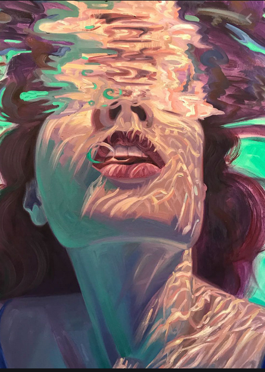
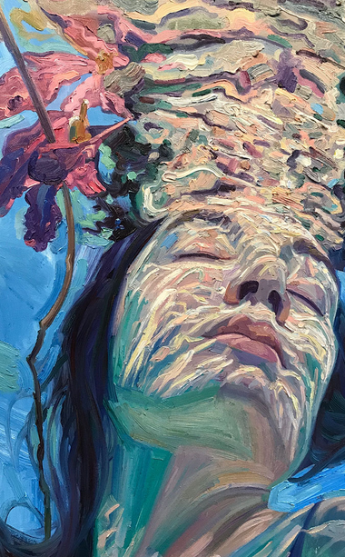
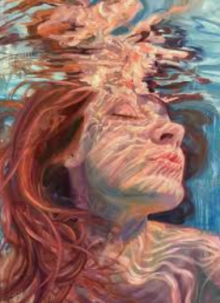

Responsive webpage



Emrich's underwater oil paintings:
Most of Emrich’s underwater oil paintings depict women floating freely with their faces breaking the surface. One of the most fascinating details of her artworks is the different colors popping through the light as they seem to dance on the subject’s skin in mesmerizing patterns. Take a dive into her collection of bewitching underwater oil paintings and explore the spellbinding beauty of water.